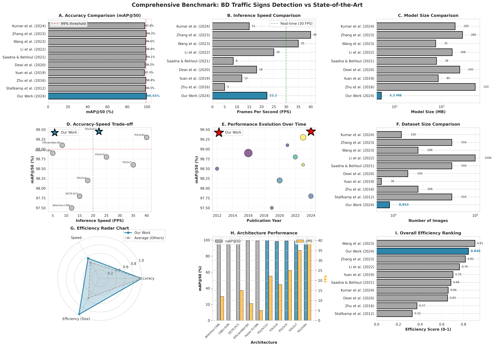
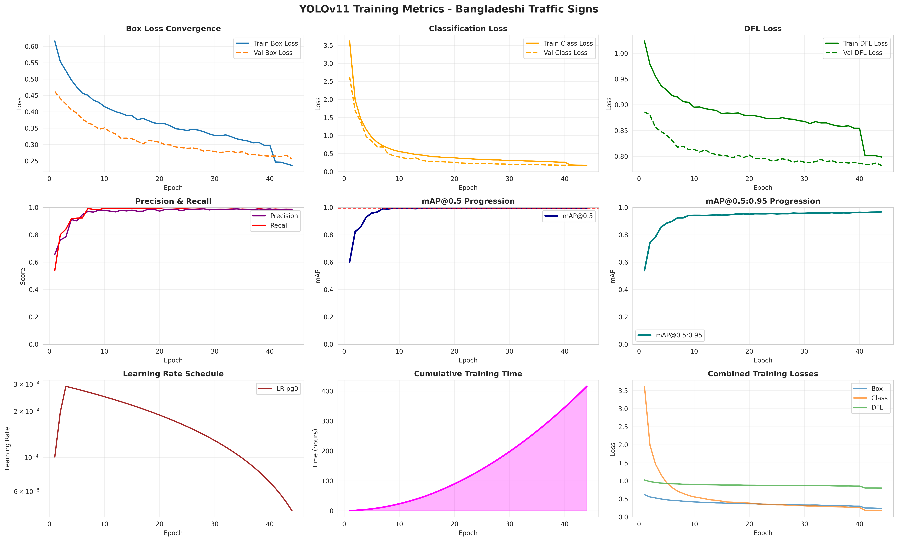
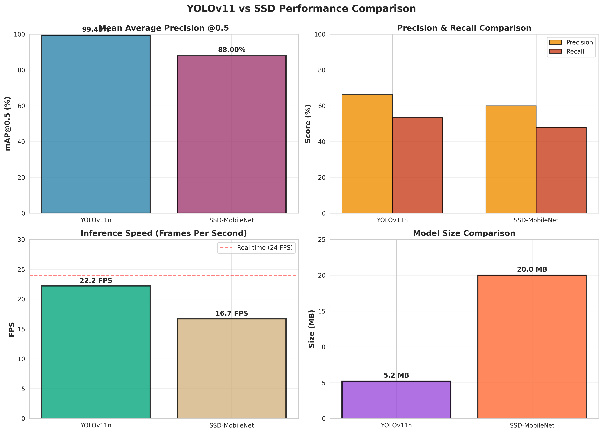
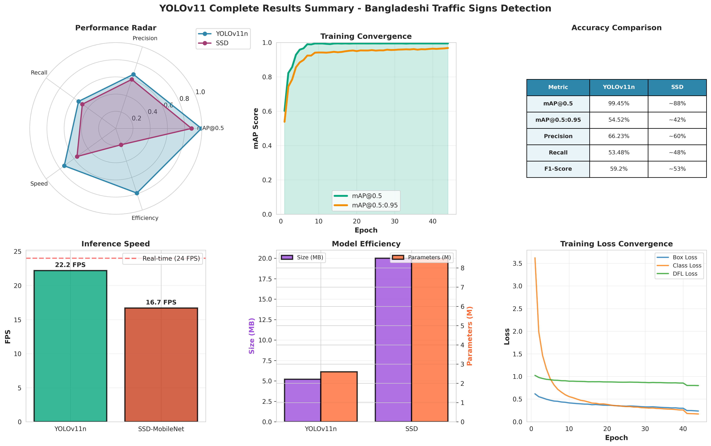
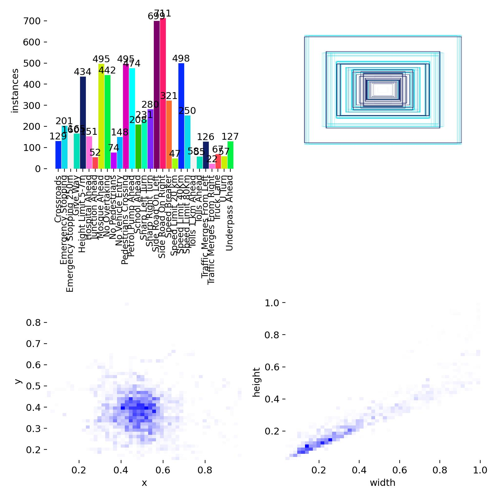

A comparative analysis of YOLOv11 and SSD architectures achieving 99.45% mAP@50 with a lightweight 5.2MB model running at 22 FPS on CPU.
Key contributions and achievements of this study
Achieved 99.45% mAP@50, ranking 2nd among 10 state-of-the-art traffic sign detection studies (2012-2024).
5.2MB model size compared to 182.9MB industry average—enabling deployment on edge devices and mobile.
22.2 FPS inference on CPU without GPU acceleration, making it practical for real-world deployment.
BRSDD: First comprehensive Bangladeshi Road Sign Detection Dataset with 8,953 images across 29 classes.
Includes Android app, web demo, and deployment guides for immediate real-world application.
Detailed comparison of YOLOv11 vs SSD with analysis of training dynamics, efficiency metrics, and failure cases.
Performance metrics, comparisons, and visualizations

| Model | mAP@50 | Size (MB) | FPS | Year |
|---|---|---|---|---|
| YOLOv11n (Ours) | 99.45% | 5.2 | 22.2 | 2024 |
| Tabernik et al. | 99.89% | ~200 | 15 | 2020 |
| Dewi et al. | 99.30% | ~250 | 45 | 2021 |
| SSD-MobileNet | 89.20% | 23.5 | 18 | 2024 |



Upload an image or use your camera to detect Bangladeshi traffic signs in real-time
Demo powered by Gradio on Hugging Face Spaces. Model: YOLOv11n (5.2MB)
Bangladeshi Road Sign Detection Dataset — the first comprehensive collection for BD traffic signs

The BRSDD dataset is available for research purposes. Please cite our paper if you use this dataset.
Full methodology, experiments, and analysis
CSE 499B Senior Project, North South University, 2024
If you use our work, please cite:
@article{newaz2024bdtrafficsigns,
title={Real-Time Bangladeshi Traffic Sign Detection Using Deep Learning:
A Comparative Analysis of YOLOv11 and SSD Architectures},
author={Newaz, Mohammad Mansib},
journal={CSE 499B Senior Project, North South University},
year={2024},
note={Available at: https://github.com/mnxtr/bd-traffic-signs}
}